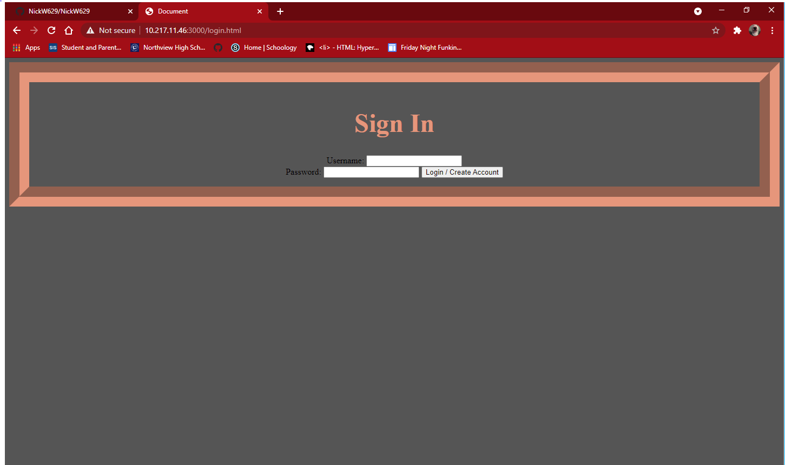
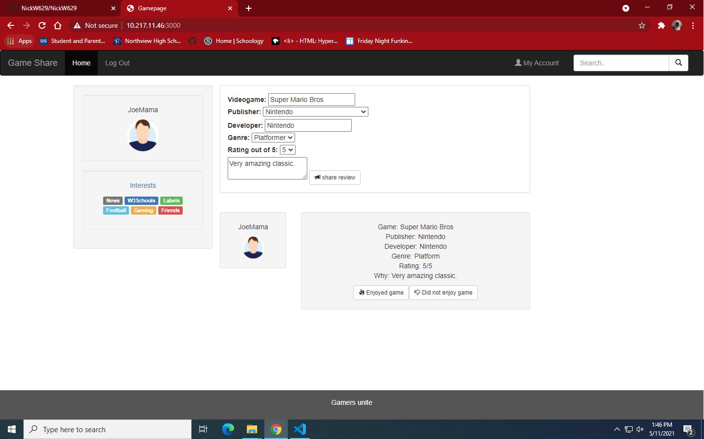
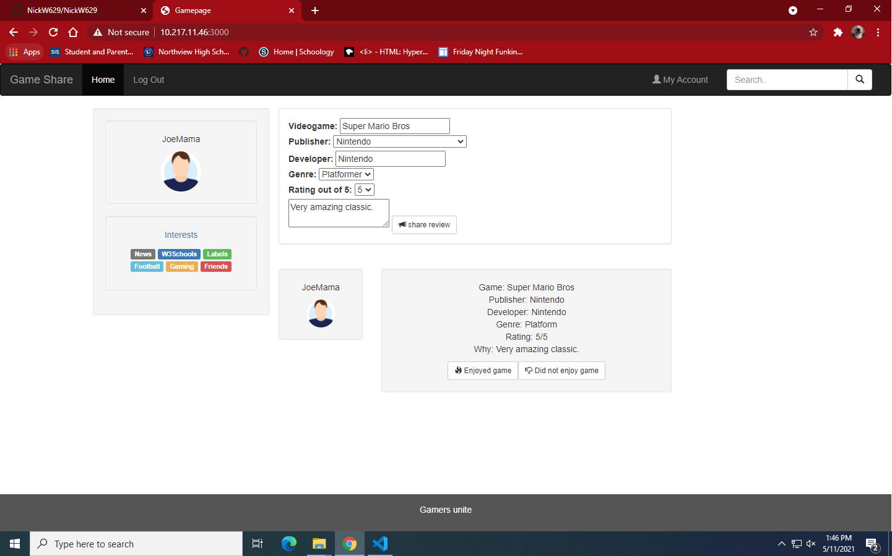

Gamepage
Description
When you enter into our app it will take you to the login page, as shown in the first image. Our website will then ask you to put in a username and password, without one you may not continue on. However, once you enter said username and password, you will be taken to our mainpage, shown in the second image. From here you will be given a space to write your review, for the game of your choice. As soon as you click the submit button, your review will appear in the review section, as shown in the final image. While the server is live, you can view everyone's reviews with a refresh of the page.
Screenshots
 
